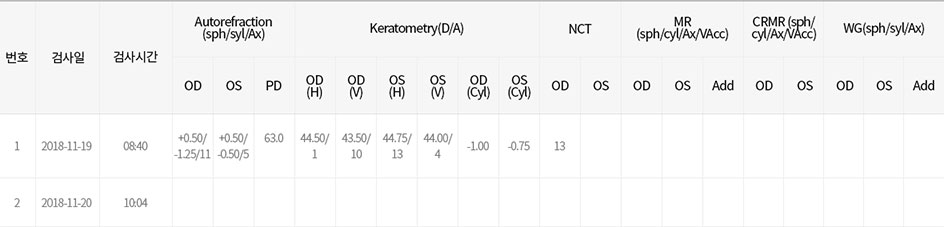
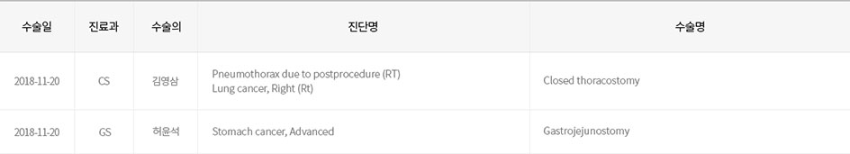
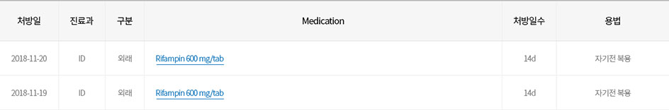
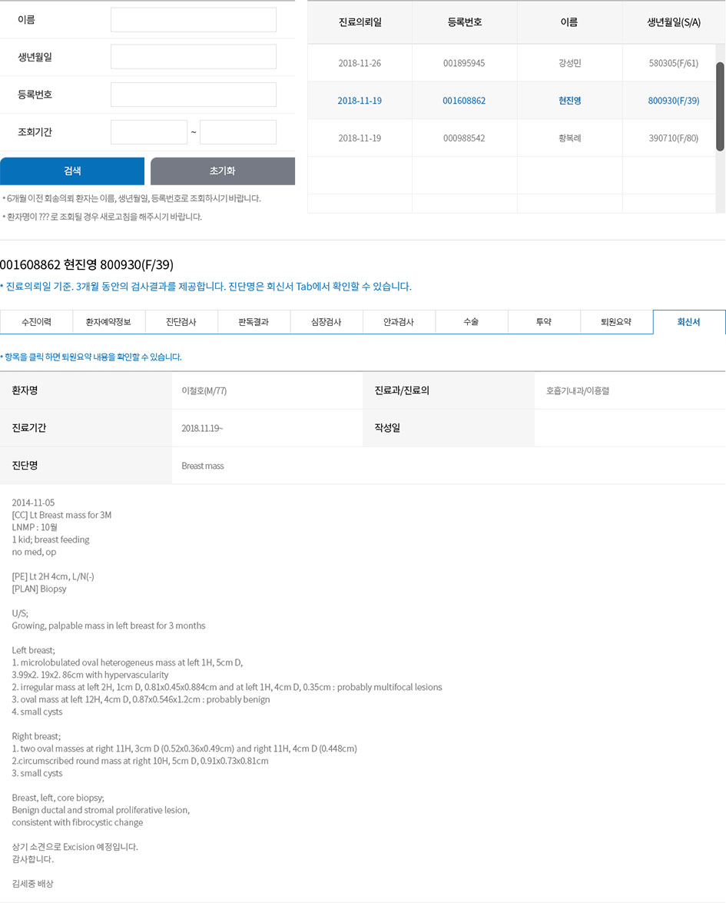

* 최초 의뢰일 기준 이후의 검사결과를 최근 일자별로 조회 가능합니다. 특정 검사의 누적검사결과를 한 화면에서 확인할 수도 있습니다.
* 영상검사, 병리과검사 및 각 진료과에서 시행하는 장비검사 결과를 조회 할 수 있고, [이미지보기]에 '보기'가 있는 검사는 PACS 혹은 해당 이미지를 직접 조회할 수도 있습니다.
* Cardiac Refoet(심장정밀검사)와 Muse(심전도)를 클릭하시면 각각의 결과를 조회 할 수 있습니다.
* 안과 진료과 자체에서 시행하는 Autorefraction, Keratometry, NCT, MR 결과를 조회 할 수 있습니다.

* 의뢰환자의 수술 내역을 확인할 수 있습니다.

* 최초 의뢰일 이후 본원에서 처방한 경구약, 주사약을 조회 할 수 있습니다.

* 의뢰환자의 입원 내역에 대한 퇴원요약을 조회 할 수 있습니다.
* 작성되어 발송된 전원의뢰서의 내용을 재확인 할 수 있습니다.
